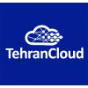

بودجه و منابع مورد نیاز - طرح کسب و کار TehranCloud
در این بخش، جزئیات بودجه و منابع مورد نیاز برای راهاندازی و توسعه پلتفرم IoT TehranCloud در بازار ایران ارائه شده است.
6.1 بودجه اولیه برای طراحی MVP گرافیکی و پروتوتایپ
برای فاز اولیه توسعه که شامل طراحی MVP گرافیکی و پروتوتایپ موتور اصلی پلتفرم IoT است، بودجه زیر پیشنهاد میشود:
| بخش |
هزینه (میلیون تومان) |
جزئیات |
| طراحی MVP گرافیکی در Figma |
50 |
- طراحی رابط کاربری (UI) و تجربه کاربری (UX): 30 میلیون تومان
- تحقیقات کاربری و تستهای اولیه: 10 میلیون تومان
- بازنگری و اصلاحات: 10 میلیون تومان
|
| توسعه پروتوتایپ موتور اصلی پلتفرم IoT |
200 |
- طراحی معماری سیستم: 40 میلیون تومان
- توسعه backend اولیه: 80 میلیون تومان
- پیادهسازی پروتکلهای ارتباطی IoT: 50 میلیون تومان
- تست و دیباگ: 30 میلیون تومان
|
| زیرساخت و ابزارهای توسعه |
30 |
- سرورها و فضای ابری: 20 میلیون تومان
- لایسنسهای نرمافزاری و ابزارهای توسعه: 10 میلیون تومان
|
| تیم توسعه (3 ماه) |
180 |
2 توسعهدهنده ارشد: 2 × 30 میلیون × 3 ماه = 180 میلیون تومان |
| مدیریت پروژه و هزینههای جانبی |
40 |
شامل هزینههای مدیریت، اداری و پیشبینی نشده |
| مجموع بودجه اولیه |
500 |
|
6.2 توضیحات تکمیلی
- تمرکز بر هسته اصلی: این بودجه برای توسعه موتور و هسته اصلی پلتفرم IoT بدون در نظر گرفتن صنعت خاصی تخصیص یافته است. این رویکرد امکان ایجاد یک پایه قوی و قابل توسعه را فراهم میکند.
- انعطافپذیری: طراحی MVP به گونهای خواهد بود که امکان سفارشیسازی برای صنایع مختلف در مراحل بعدی را فراهم کند.
- قابلیت مقیاسپذیری: معماری سیستم به گونهای طراحی خواهد شد که امکان مقیاسپذیری سریع و کمهزینه را در آینده فراهم کند.
- تمرکز بر UX/UI: با توجه به اهمیت تجربه کاربری در پذیرش پلتفرم، بخش قابل توجهی از بودجه به طراحی گرافیکی و UX اختصاص یافته است.
- تیم چابک: با استفاده از یک تیم کوچک اما با تجربه، امکان توسعه سریع و کارآمد فراهم میشود.
6.3 مراحل بعدی
پس از تکمیل این فاز، نیاز به سرمایهگذاری بیشتر برای موارد زیر خواهد بود:
- توسعه ویژگیهای خاص صنعتی
- گسترش تیم فنی و بازاریابی
- راهاندازی زیرساختهای تولید
- تستهای گسترده و بهینهسازی عملکرد
برآورد اولیه برای این مراحل حدود 2 میلیارد تومان است که جزئیات آن در طرح کسب و کار کامل ارائه خواهد شد.
پیشبینی هزینههای عملیاتی سال اول
| بخش |
هزینه (میلیون تومان) |
| حقوق و دستمزد |
1,200 |
| اجاره و هزینههای دفتر |
300 |
| بازاریابی و فروش |
500 |
| زیرساخت فنی و نگهداری |
400 |
| تحقیق و توسعه |
600 |
| مجموع |
3,000 |
6.4 منابع انسانی مورد نیاز
برای راهاندازی و توسعه اولیه TehranCloud، تیم زیر مورد نیاز است:
- 2 توسعهدهنده ارشد (Full-stack)
- 1 متخصص UI/UX
- 1 متخصص IoT
- 1 کارشناس فروش و بازاریابی
- 1 مدیر پروژه
6.5 منابع فنی مورد نیاز
- سرورهای اختصاصی یا فضای ابری
- ابزارهای توسعه نرمافزار
- پلتفرمهای تست و کنترل کیفیت
- سیستمهای امنیتی و حفاظت از داده
این برآورد بودجه و منابع مورد نیاز، TehranCloud را قادر میسازد تا با قدرت وارد بازار IoT ایران شده و پایههای لازم برای رشد و توسعه آینده را فراهم کند.